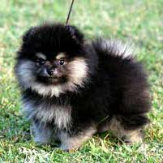

Померанський шпіц
Загальні характеристики породи
Сімейство шпіців зазвичай асоціюється у всіх з мініатюрними померанськими шпіцами.Взагалі шпіци досить активні та життєрадісні, вони дуже люблять багато стрибати і дзвінко гавкати. Хвостики у них загнуті вгору і за формою нагадують крендель, а кирпаті носики більше схожі на лисячі. На додачу до всього у цих собак на маківці стирчать смішні вушка, що роблять песиків більш симпатичними.
Переваги та недоліки породи
-
Переваги
- Веселий характер
- М'який характер
- Милий зовнішній вигляд
- Низька витрата на харчування
-
Недоліки
- Непропорційне співвідношення розмірів і гучності
- Цуценята цієї породи дуже тендітні і нерідко їхні ігри призводять до переламів кісток
- Шпіци занадто сильно прив'язуються до господарів і можуть просто не витримати довгої розлуки
Догляд та утримання
Шпіци, як, утім, і будь-які інші собаки, потребують догляду і вимагають особливих правил утримання:- Ознайомитися з тим, чим годувати собаку, краще ще на етапі, коли майбутні господарі тільки планують завести тварину. Важливо знати, що шпіци часто бувають схильні до ожиріння, тому питання їхнього харчування має стояти гостро і жорстко контролюватися господарями.
- Для хорошого стану шерсті важливу роль відіграє не лише харчування, тому собачок потрібно регулярно розчісувати .
- Стрижка не обов'язкова, але бажана. Машинна стрижка шпіцам протипоказана, а ось акуратно надати шубці потрібну форму ножицями можна. Головне не зачіпати нижній шар підшерстя, оскільки відростає він дуже повільно.
Галерея
